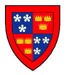
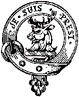

Oran Mhorair Mhic-Shiomoin
Ceanncinnidh nam Frisealachn d'éis a chur gu bàs an Sasgunn
le Alasdair MacMhaighstir Alasdair
An Elegy on Lord Lovat - Déploration de Lord Lovat
Chief of the Frasers, after his execution in England - Chef des Frasers, après son exécution en Angleterre
By/par Alexander McDonald
Source:"Bliadhna Theàrlaich" by John McKenzie (1844)Tune:"Mac Shimi mor a basachadh"
"Lord Lovat Beheaded"
|
To the tune
From Captain Simon Fraser's Collection N°59 (first published 1816) The tune is explicitly linked to the present poem by a note: "The name of this melody bespeaks what gave occasion to it. It is the production of the famous poet Alexander McDonell [=McDonald] who is never at a loss in addressing the feelings, and who says he would for ever regard Lord Lovat's death as murder, having be tried merely by his enemies." However in the song collection "Bliadhna Theàrlaich" the tune quoted is "Hap me with thy petticoat" . This pentatonic song is mentioned by Allan Ramsay as the tune to the song N°13 in his " Gentle Shepherd ", "Were I assured you'd constant prove", (1725). The original words are by no means attuned to a dirge. They are to be found in D. Herd's "Ancient and Modern Scottish Songs" (1769 or 1776): O Bell, thy looks ha'e kill'd my heart, I pass the day in pain; When night returns I feel the smart And wish for thee in vain. I'm starving cold, while thou art warm; Have pity and incline, And grant me for a hap that charm ing petticoat of thine... |
A propos de la mélodie
Tiré de la Collection du Capitaine Simon Fraser, N°59 (édition de 1816) La morceau est explicitement associé au présent poème par une note: "Le nom de cette mélodie indique assez quel événement elle commémore. On la (les?) doit à l'illustre poète Alexander McDonald qui s'entendait à exprimer les émotions, et affirmait qu'il considérait l'exécution de Lord Lovat comme un meurtre, puisque seuls ses ennemis étaient les acteurs de son procès." Toutefois le recueil "Bliadhna Theàrlaich" indique comme musique "Hap me with thy petticoat" . Ce chant pentatonique est cité par Allan Ramsay comme support du chant N°13 de son " Gentle Shepherd ", "Were I assured you'd constant prove", (1725). Les paroles originales n'ont vraiment aucun rapport avec un chant funèbre. On les trouve dans les "Chants écossais anciens et modernes" de D. Herd (1769 ou 1776): Ta beauté m'a percé le coeur Et je vis dans la peine D'être habité, pour mon malheur, D'une espérance vaine. Loin de ta chaleur, j'ai si froid. Pitié, fais que s'entrouvre Ce charmant jupon que voilà Et que je m'en recouvre... |
Tunes sequenced by Christian Souchon
Sheet music- Partition
|
 |

|
 |

|
AN ELEGY ON LORD LOVAT, Chief of the Frasers,
after his execution in England. 1. MANY a blank is found for us To fill again in Britain, Which not without unsheathing swords Can e'er be rightly written; One of them is our fairest gem, The kingdom's foremost hero, Great Lovat, [1] whom that Parliament [2] Of ill-will executed. My love his fair and handsome face That was both strong and gentle, According as th' occasion was Steel-like became thy nature; Reckless against thy foes thou wast When shining blades were brandished, Kindly and favourable to friends, Modest and unassuming. 2. Rich was that treasure-house indeed In priceless wisdom splendid, Which clove the villain's axe away From thy fine princely body; No morsel of the clemency Which God of Truth ordained, Exists in the foul Butcher's breast King George's son by the harlot. [3] 0 that accursed Dumballoch clown, [4] Sour store of crooked treason, Thou didst obscure a shining star Who in the North did guide us; If e'er thy sin of treason be Forgiven thee, unpunished, 0 I'm sure thy brother Judas, then Has likewise found salvation. 3. Thine own lord of deserved fame Thou kissedst with treachery, In order that thou mightst obscure That shilling jewel, good Lovat; 0, Judas-like the villainy Thou didst for gold against us, And many a man will seek to find What traitor did the mischief. 0 Gem of brightest excellence True light of each good story, Full many were th' intelligent Thoughts of thy brain's devising; In war thou wast most valorous, High-spirited, well-gifted, In peace thy wisdom fruitful was And well it paid to follow thee. 4. Thou'rt like the play of shining steel Unbent in time of danger, Unmixed, from the furnace-mouth With any baser metal; So long ago thy form was struck, The coining of thy image, No Christians they who blasted thee But followers of the Devil. O shining Star of courtesy Clever thou grew, and regal, Thou gav'st thy love to Prince Charles Stewart Thy loyalty to his forebears; A mighty martyr thou didst fall For sake of crown and kingdom, And humbly gav'st thy own pure soul To God of Truth in heaven. 5. Fair was the death by which thou fellst, And gracefully thou metst it; Great were the gifts God gave to thee Mild, patient, and enduring, When cheerfully to mutilation Thou offeredst thy fair body, And with thy firm, courageous faith Thy neck unto the monsters. [5] Alas for those brave lion-hearts [6] Those spirits firm, undaunted, Death will not make them bow to wrong By gallows, axe, or torture; O joyful, glorious will be On Doomsday resurrection, When George's folk, a-shake with fear, Scream from their graves for mercy. 6. Many a joyful, fragrant stream In thy life-blood was mingled, I'll not again attempt to tell, For thy descent is written; The Royal blood. of Stewart was there [7] Coursing thy precious body, Thou wast descended from the flower Of Scotland's greatest nobles. Pigbreeders commonly believe There is no food in the world That makes their hogs so sleek and fat And gross, as human flesh; After the gentry they have slain So sturdy-thick have grown The necks of George's swinish brood, That axe can scarce them cleave. 7. There is a cry that vengeance calls Loud as the blood of Abel, For those famous martyrs' wounds Each torment shall afflict you; On every single juryman Who in the court [8] condemned them, Each lying, two-faced witness there Threefold shall he be stricken. 0, sorely will this be revenged Upon the necks of Rebels, When comes our royal Prince again, Fierce anger in his visage; The edges of his brandished blades Down to the grass will mow them, You'll suffer gallows, fire, and sword, Impatient for your torture. 8. 0, turn again this deathly wheel, That Christians be not slaughtered, Lead us from greedy Egypt here To Canaan's promised country; Or else destroy King Pharaoh now By plague and sword and burning, A Moses with an army send To bring him to subjection. We are beneath oppression's heel, Ashamed we are, and weary, The remnant that survives of us Is scattered 'mongst the mountains; With terror filled before our foes Who hunt us midst the islands, They've made of us but wretched thralls, 0 Charlie, come to help us. Translated by John Lorne Campbell in "Highland Songs of the '45" (1932) |
ORAN MHORAIR MHIC-SHIOMOIN, Ceanncinnidh
nam Frisealach, d'eis a chur gu bas an Sasgunn 1. IS lionmhor blank a th' againne Am Breatuinn suas ri lionadh, Nach deantar gun ghniomh chlaidheamhan Gu ceart gu brath a sgriobhadh; Gur h-ann diubh ar n-ailleagan, Ard-armunn sin na rioghachd, Mac-Shiomoin Mor, [1]a bhàsaicheadh Le Pàrlamaid [2] na mi-ruin. Mo chion an ùrla bhlath-mhaiseach Bhla cruaidh us tlath 'sna tiomaibh, A réir 's mar bhiodh an t-adhbhar ann Bu staillinn bu phriomh-mheinn duit; Bu bhras ri h-uchd do namhad thu 'N uair thairnte na lainn llomhtha, Bu bhaidheal, caoin ri d' chairdean thù, Gun ardan, ach uiriosal. 2. Bu bheairteach an tigh-storais sin De ghliocas corr bha priseil, So sgar tuagh an Rogaire O'n choluinn choir bha rioghail; Braon d'a lugh'd de throcaireachd A dh'orduich Dia na Firinn, Cha n-eil an uchd an Fheoladair Mac DheorSa ris an striopaich. [3] O bhalaich sin Dhunbhalaich ud, [4] Searbh-shaillear nan cam-ghiùdan, Gun stur thu Reulla lainnireach Fo thuath bu bharant illil duinn; Ma gheibh thusa maitheanas 'Nad pheacadh-brath, gun sgiursadh, Is cinnteach liom gun shabhaladh Do lan-dearbh-bhrathair, Iùdas. 3. T'fhior-mhaighstir cliu-thoillteanach Le foil1 gull d'rinn thu 'phogadh, Gu smal chur air na foinealaibh An diamond sin dheagh-Lobhat; Och, 's Iudasach an t-sloightireachd A rinn thu air bhriob oir oirnn, Gur h-iomadh neach a dh 'fhoighneachdas Co 'n troitear rinn an doibheairt. O Leug nam buadhan soilleire, Fhior-choinneal gach deagh-sheanchais, Bu lionmhor cuibheall ghoireasach Chinn sgoinneil ann ad eanchainn; Ri cogadh bha thu misneachail, Deagh-ghibhteannach,ard-mheanmnach, An sith bu torrach gliocas duit, 'S b'fhior-phiseachajl do leanmhainn. 4. Fior-mhire geal na cruadhach thu, 'Sa chruadal nach d'rinn lubadh, Gun dad de mheasgadh truaillidh 'nad Mheinn uasail d'eis na fuirneis'; Bu cho sean do bhualadh-sa Agus suaicheantas do chuinnidh, 'S nach Criosdaidhne chuir tuairgneadh ort Ach sluagh sin Bhelsibuba. O Reulla gheal na cùirtealachd Chinn lan de shurd garg, rioghail, Thug gradh do'n Tearlach Stiubhartach 'S bha durachdach d'a shinnsreadh; Gun thuit thu 'd mhartair curamach As leth a' chruin 's do rioghachd, Us t'anam glan air umhlachadh Thug thu do Dhia na Firinn. 5. Gur grinn am bas ri 'n d'fhuirich thu, 'S a dh'fhuiling thu gu ciatach, Gur m6r na gibhte bunailteach, Seimh, furasach, thug Dia dhuit, 'N uair liubhair thu gu furanach Do chorp da ghuin 's da riasladh, 'S le d' chreideamh dail1gean, curaisdeach, Do mhuineal do na biastaibh. [5] Och, och ! na leomhainn [6] threubhach sin, 'S na spioraid threuna, chruadhach, Nach bogaich bas gu h-eucoir iad Croich, geuragan, no tuaghan; Och, .s glormhor, glan, ard-eibhneasach, 'N ais-eirigh 'san m-luain sin, Us Deorsaich, 's crith le deisdinn orr', A' reiceil as na h-uaighibh. 6. Is lionmhor caochan cubhraidh, mear, 'S bras-shiubhlachain 'nad fhion-fhuil Nach rig mi leas bhilh g' urachadh, Sgriobh ughdair sios do fhriamhachd; Fuil Stiubhartach a' Chruin ud [7] Air a dubladh 'nad chorp priseil, 'S gach fuil as uaislc flurana, Gu leir as fiu 'san rioghachd. Gur barail am measg mhucairean Nach eil biadh-mhuc 'san t-saoghal A dh 'fhagas cho lom-luchdmhor iad, 'S cho sultmhor, ri feoil dhaoine ; Tha Dftors' us a chuid uirceinean, D'eis na mhurt e dh'uaislibh, Am muineal cho garbh, sturranta 'S gur gann is urra tuagh annt'. 7. Tha sgairteachd glaodhach diubhaltais Ard, dluth, mar bha fuil Abeil, O chreuchd nam martair cliuiteach ud Thig gort, us sgiurs', us plaigh oirbh; Air gach ball de'n t- iùry ud A shuidh an cuirt [8] dan diteadh, Gach fianuis fhallsa, dhubailte, Gun sgiursar e tri-fillte. 0,'s garbh a dhiubh]ar fathast so Air amhaichibh nan Reubal, 'N uair thig am Prionnsa flathasach, 'S fearg chathanach 'na eudainn; Le faobhar a lann crathanach Gun sgathar sios gu feur iad, Bidh croich, us tein' us claidheamh ruibh Gun fhaighidinn dur ceusadh. 8. Cur deas de'n chuibhill bhasmhoir so, 'S na fuiling ar nan Criosdaidh; Thoir as an Eiphit sglamhaich sinn Gu fonn Chanaain phriseil; Air neo, sgrios Righ Pharaoh-sa Le claidheamh, plaigh, us griosach, 'S cuir Maois us armailt thabhachdach Thoirt bairlinn da bheir cis deth. Tha sinne d'eis ar saraichthe, Ar naraichth','s moran sgios oirnn, An drabhag at' air maireann dinn Air feadh nan carn air sioladh, Le 'mheud 's tha dh'fhiamh roimh'r naimhdibh oirnn 'Gar scalg a ghl1ath 'sna h-innsibh, Gun d'rinn iad traille grana dhinn, 0 Thearlaich, fair reliobha . |
DEPLORATION DE LORD LOVAT, Chef du Clan Fraser
Après son exécution en Angleterre. 1. Ton livre est plein, Britannia, De blancs qu'il faut récrire. Le sabre au fourreau ne peut pas, Pour ce faire, suffire. L'un de ces blancs est le diamant Dont s'ornait la Couronne: Le Grand Lovat, [1] condamné par Un Parlement aux ordres; {2] Dont les nobles traits exprimaient La force et l'indulgence. Il était de miel ou d'acier Selon les circonstances. Insouciant devant l'ennemi A l'épée redoutable Il était bon pour ses amis Et modeste et affable. 2. Qu'il était riche le trésor De sa grande sagesse! La hache traîtresse du corps A séparé la tête. Pas un atome de pitié Qu'un Dieu juste réclame N'effleura jamais le Boucher Né d'une courtisane. [3] Dumballoch, maudit histrion, [4] Monstre de perfidie, L'étoile du septentrion Par toi fut obscurcie; Si Dieu oublie ta trahison T'épargne sa colère, C'est qu'Il accorde son pardon Même à Judas, ton frère. 3. Ton maître au renom mérité Tu l'embrassas par ruse, Afin d'éclipser à jamais La lueur qu'il diffuse. Cet acte digne de Judas Nous porte préjudice. Mais nombreux sont ceux qui déjà Veulent punir ton vice. O l'inestimable joyau De son intelligence! Vraie lumière éclairant les mots! Verbe plein de puissance! Si dans la guerre s'exprimait Sa valeur avec verve, Sa science, quand venait la paix, Justifiait qu'on le serve. 4. A l'acier brillant qui ne ploie Au cours des pires joutes, De métal de mauvais aloi Jamais le temps n'ajoute. A sa noble image frappé Fut son moule immuable. Des chrétiens n'ont pu le briser Mais des suppôts du Diable. O seigneur brillant et courtois, Aussi noble que sage, A Charles Stuart alla ta foi Ainsi qu'à son lignage; A leur cause, martyr puissant, Tu sacrifias ta vie Et ton âme pure, humblement, A Dieu tu la confies. 5. Belle, la mort dont tu mourus, Et grande, l'élégance - C'était un don de Dieu de plus - Ainsi que la patience Avec lesquelles tu marchas Sans broncher vers la hache, Tendant avec courage et foi Ta tête au coup des lâches! [5] Amis pleurons ces coeurs de lions, [6] Qui, stoïques, endurent, Plutôt que la compromission, Gibet, hache ou torture. O vienne le temps glorieux Du Jugement ultime, Quand les Hanovre haïs de Dieu Descendront à l'abîme! 6. Tant de clairs ruisseaux odorants Confluaient en tes veines. A quoi bon les citer céans? La chronique en est pleine! Si le sang royal des Stuarts [7] Etait l'une des sources, Bien d'autres avaient pour départs Des Ecossais illustres. Volontiers les gardiens de porcs Aux basses créatures Donneraient à manger des morts, Fort riche nourriture! George tua tant de nobles gens, Son col a tant de couenne, - Autant qu'un pourceau - qu'à présent. La hache ne l'entame. 7. Comme jadis celui d'Abel, Leur sang hurle vengeance. De ces martyrs le sort cruel Pèse sur cette engeance. Pour chaque membre du jury De cette cour [8] inique, Pour chaque faux témoin aussi La torture soit triple. On verra tranchés à leur tour Les cous de ces sauvages, Quand Charles sera de retour La colère au visage. Pour coucher sur l'herbe ces gueux L'épée brandie les guette. La corde et le glaive et le feu A les punir s'apprêtent. 8. Cessant de broyer les Chrétiens, Qu'enfin Dieu les conduise, Loin des cupides Egyptiens, Vers la Terre promise! Que s'abatte sur Pharaon Un déluge de flammes! Qu'un Moise et ses escadrons Viennent vaincre l'infâme Qui nous tient ainsi terrassés, Pleins de honte et exsangues! Les survivants sont dispersés Par les monts et les landes. Tandis qu'effrayés, d'autres fuient L'ennemi d'île en île. O Charles, viens! Que prenne fin La servitude vile! (Trad. Ch.Souchon (c) 2009) |
|
The following notes [1] through [8] are attached to John Lorne Campbell's translation:
[1] Lord Lovat, a Whig in 1715 and a Jacobite in 1745, was for many years in correspondence with both parties. He enjoyed much popularity in the Highlands from his romantic career and his kindliness to his clansmen. He was the most important person to suffer execution after the Rising, which is doubtless the reason that MacDonald chose him as the subject of this elegy. [2] Lovat was condemned and sentenced by his peers after impeachment by the House of Commons. [3] There is no actual justification for MacDonald's attacks on the morals of Queen Caroline. [4] This refers to Hugh Fraser of Dumballoch, who was a witness against Lovat at his trial. He gave evidence of the raising of the Frasers after Prestonpans had decided Lovat to declare for the Prince. Dumballoch was not a very important witness at the trial, for far more damning evidence was given by John Murray of Broughton (the Prince's secretary) and Robert Fraser, Lovat's secretary, either of whom would have better merited MacDonald's abuse. [5] Lovat was executed on 9th April 1747. He met his end with considerable courage and dignity, after having conducted his own defence with much ability. He was tried by his peers and condemned unanimously. [6] Eighty-six persons were executed for participating in the Rising, including three peers- Lovat himself and the Lords Balmerino and Kilmarnock. The Earl of Cromarty was condemned to death, but was granted a reprieve. [7] Lovat was the great-grandson of Lady Elizabeth Stewart, daughter of John, Earl of Athol, Chancellor of Scotland in 1578 under James VI. [8] Those of the Jacobite prisoners who were commoners were tried before a Grand Jury at the Court of St Margaret's Hill, Southwark. The trials commenced on 15th July 1747 and the concluding trial took place on 28th November of that year. Trials were also held at Carlisle and York. The trial of Scottish prisoners in England was a breach of the eighteenth article of the Treaty of Union. 
"If Simon Fraser had died at any time in his first 79 years, he would be memorable as an unspeakable rascal and no more. But he was spared to make his exit on Tower Green with a happy bravery that has something heroic about it; no one ever played to the gallery so well. He wriggled and twisted to the end of his trial in the House of Lords, and went to his death with a running fire of good humour.
"you'll get that nasty head of yours chopped off, you ugly old Scotch dog,"
"The more mischief, the better sport." And, on the scaffold itself he was merry to the last, testing the axe's edge, telling his friends to cheer up since he, after all, was cheerful, joking with the executioner about how he would be angry if the man didn't make a neat job of it, and finally laying his head on the block without a tremor. As his biographer says, if he lived like a fox, he died like a lion. After Culloden, where Simon did not fight, he was sentenced to be hanged, drawn and quartered on the Tower Hill, London. Since he was of the peerage they decided only to chop his head off. He was the last person in history beheaded on Tower Hill. It was April 9, 1747, exactly one week short of a year after the Battle of Culloden, the last Jacobite rebellion. The story of Simon the Fox is every bit as compelling as that of William "Braveheart" Wallace, if not more, as it is a true Highland story. Ironically, those of the throne that put him to death sat there because of his the Clan Fraser's part in the rising of 1719. Source: Angus Fraser of Clan Fraser Association for California |
Les notes [1] à [8] qui suivent sont tirées de la traduction anglaise de John Lorne Campbell:
[1] Lord Lovat, Whig en 1715 et Jacobite en 1745, avait longtemps entretenu des relations avec les deux partis. Il devait sa popularité dans les Highlands à sa carrière rocambolesque et à son dévouement à son clan. Il fut le plus haut personnage à être exécuté après le soulèvement, ce pourquoi, très certainement, McDonald le choisit comme sujet de son élégie. [2] Lovat fut condamné par ses pairs après avoir été mis en accusation par la Chambre des Communes. [3] Il n'y a aucune raison objective de s'en prendre, comme le fait McDonald, à la moralité de la reine Caroline. [4] Allusion à Hugues Fraser de Dumballoch qui fut témoin à charge au procès de Lovat. Son témoignage portait sur le rôle joué par Lovat dans le soulèvement du clan Fraser après que Prestonpans l'eut décidé à se rallier publiquement au Prince. Son témoignage fut loin d'être aussi accablant que ceux de John Murray de Broughton, le secrétaire du Prince, et de Robert Fraser, le secrétaire de Lovat. L'un ou l'autre de ces derniers aurait d'avantage mérité les injures de McDonald [5] Lovat fut exécuté le 9 avril 1747. Il mourut avec un courage et une dignité remarquables, après avoir assuré lui-même sa défense avec beaucoup d'habileté. Il fut jugé par ses pairs et condamné à l'unanimité. [6] 86 personnes furent exécutées en raison de leur participation au soulèvement. Parmi eux trois pairs du royaume: Lovat lui-même ainsi que Lord Balmerino et Lord Kilmarnock. Le Comte de Cromarty fut également condamné à mort, mais bénéficia d'une commutation de peine. [7] Lovat était l'arrière petit-fils de Lady Elisabeth Stewart, fille de John, Comte d'Athol, Chancelier d'Ecosse en 1578 sous le règne de Jacques VI. [8] Ceux parmi les prisonniers Jacobites qui étaient roturiers furent jugés par un grand jury au tribunal de St Margaret's Hill, à Southwark. Les procès commencèrent le 15 juillet 1747 et la dernière session eut lieu le 28 novembre de la même année. D'autres procès d'assises se tinrent à Carlisle et à York. Que des prévenus écossais soient jugés en Angleterre constituait une atteinte au Traité d'Union.
"Si Simon Fraser était mort avant 80 ans, il aurai laissé le souvenir d'une ignoble crapule. Mais le Destin lui réservait une fin toute empreinte d'héroïsme et de panache: personne avant lui n'avait fait de sa mort un spectacle pour amuser la galerie. Il argumenta et se défendit jusqu'au bout pendant son procès à la Chambre des Lords et il monta à l'échafaud en faisant crépiter une salve de bons mots.
"On va te couper ta sale tête de vieux chien galeux d'Ecossais,"
"Plus on est de coquins, plus on rit." Et, même sur l'échafaud, il ne se départit pas de sa bonne humeur: il vérifia le tranchant de la hache, dit à ses amis: "Vous en faites une tête! Est-ce que je suis triste, moi?", plaisanta avec le bourreau en le menaçant de le réprimander s'il ne faisait pas un travail impeccable... avant de poser sa tête calmement sur le billot. Comme l'a écrit l'un de ses biographes:" Après avoir vécu en renard, il mourut en lion". Après Culloden, bataille à laquelle Simon n'avait pas pris part, il avait été condamné à être pendu et écartelé à la Tour de Londres. Mais, s'agissant d'un pair du royaume on décida qu'il serait "seulement" décapité. Ce fut le dernier personnage de l'histoire à être décapité à la Tour de Londres. C'était le 9 avril 1747, pratiquement un an après Culloden, la dernière révolte Jacobite. L'histoire de Simon le Renard est aussi envoûtante que celle de William Wallace, au "Coeur Brave", sinon plus, s'agissant d'une vraie histoire de Highlander. Il est piquant de penser que les partisans de Hanovre qui l'avaient condamné à mort devaient leur rang et leur puissance au rôle joué par le Clan Fraser dans la répression du soulèvement de 1719. Source: Angus Fraser de la Clan Fraser Association for California |